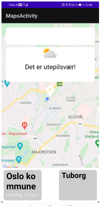

In the "Software Engineering with Projects" course, I collaborated within an interdisciplinary team, partnering with the Meteorological Institute to access diverse weather data. Opting for an open-ended case, we embarked on the development of a beer recommendation app. Employing various data collection methods such as interviews and surveys, we proficiently crafted code and tests using Kotlin.
How does it work?
The primary functionality of the app is that upon entering, a window displays whether it is suitable for outdoor beer enjoyment at your current location. We have integrated the Nowcast, LocationForecast, and Sunrise APIs from the Meteorological Institute, along with the device's location, to determine the outdoor beer weather conditions. Based on this data, the app calculates a percentage representing the quality of the outdoor beer weather. This percentage informs the user whether the weather is good enough for enjoying a beer outside. In the Outdoor Beer Weather app, users can also check the forecast for outdoor beer weather up to nine days in advance, and receive drink recommendations based on the season and weather conditions.
The Problem Statement
Have you ever pondered the crucial question: "What's the outdoor beer weather like now?" Or perhaps, "I wonder if there will be outdoor beer weather at the cabin this Saturday?" Well, we have. That's why we opted for an open case we've named Outdoor Beer Weather. The app caters to beer enthusiasts contemplating these questions by providing a simple way to find answers to these inquiries.
We chose this open case because we found the idea amusing and intriguing to work on. Additionally, we believed there was no limit to the additional functionality we could incorporate, constantly generating new ideas and suggestions that we found valuable. We also aimed to work on a case that is not as widely explored by others.
My main roles:
Data Collection: My primary role in this project was data collection. I wrote an interview to gain insights into the APIs of the Meteorological Institute. I conducted both a pilot interview and a main interview, establishing contact with a staff member at the Meteorological Institute. Following the interview, I transcribed and analyzed the data, before sharing the results with the group.
Later in the project, I designed a survey to provide an overview of how users envision the functionality of such an app. The survey comprised a mix of open-ended questions and feature ranking. We conducted a pilot test with 5 users and two rounds of survey distribution involving approximately 50 users.
Throughout the project, I also read several articles about weather from yr.no to gain knowledge about different weather conditions and accurate data we could use in our algorithm. Additionally, I discovered a book written by a "beer expert" that assisted us in developing beer recommendations. I shared and discussed the knowledge acquired with the group during multiple meetings.
Team and Agile Methodology: A crucial aspect of the project was teamwork and planning. We initiated the project with a social evening to set the tone and get acquainted. This strengthened our collaboration and openness. I participated in setting up a Kanban board in the Notion program to keep track of tasks and project progress. Along the way, we also experimented with stand-up meetings to keep each other updated.
Report Writing: I authored several significant sections of our 50-page report and assisted other members with their contributions. I shared both my individual and the group's process and reflections on the project. To streamline the reporting process, we maintained detailed logs throughout the project, documenting all meeting discussions and other significant events.
Design Process
The design process was exploratory, and we experimented with various approaches. The design process closely resembles Scrum's iterative sprints. Although much of the work overlaps and undergoes multiple iterations, I can categorize it into four main parts:
Idea and planning
MVP and data collection
Development and feedback/user survey
Report and reflexion
Idea and Planning
In the beginning of our project, we focused on team building and planning. We held a social evening at one of the members' places to get to know each other. Followed by several meetings where we openly discussed ideas for the project, and what we envisioned for the "Utepils" app. We also planned how we wanted to work and distribute tasks. After these meetings, we decided to use a Kanban board for task allocation and conducted stand-up meetings for work updates. Additionally, we scheduled meetings after each sprint to discuss the sprint's outcomes and plan for the next one. We created various diagrams, such as activity diagrams, class diagrams, sequence diagrams, and functional diagrams, to summarize or showcase how different parts of the app function.
An example of feature planning: We ranked the importance/coolness/ease of developing for different features we wished to implementDiagram for an overview of the APIs and their potential uses.Sequence diagram for the app's functions.
MVP and Data Collection
The next phase involved developing what we determined as the MVP (Minimum Viable Product). Simultaneously, we started acquiring data to enhance the product and began working on other features. Here, we utilized methods such as expert interviews, weather-related articles, and a weather log where we regularly captured images of the weather and compared them with the API data.
Weather log with picture of the weather on the right side and the api-data on the leftData from an article from yr.no showcasing different wind strengths and their characteristicsActivity diagram for the app's MVP
Development and Feedback
Once we had achieved the MVP, it was time to work towards the cooler but more challenging features. We decided to incorporate user opinions about the app and which features were most important. The user survey provided us with a wealth of information to improve the code and guide us in the right direction. To create a good beer recommendation, we found a book from a "beer expert" that provided insights into various types of beers and the seasons they are suitable for.

early app interfacefinal product in light and darkmode
Report and Reflection
The final part of the project involved documenting the entire process and reflecting on the choices we had made along the way. Despite thorough preparation with logs throughout the process, we found ourselves stressed and with little time towards the end. We experienced intense work in the final days to meet our goals. We had many good ideas that we discarded due to time constraints, started without completing, thought of beginning, or never planned to do. Among these are features such as a map to see the weather in other locations, additional drink recommendations, a chat function, or a search field.
What I learned
Importance of planning and cooperation in team
Different tools, such as github, notion and figma. We used them for planning, getting an overview and to cooperate
A scrumban variation to keep each other updated throughout the project
Different data collection methods like interview, surveys and searching for data online and in the library
Developing an app in kotlin
Writing a detailed report with reflections of my own and others work